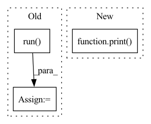

Pattern ID :29861
Before Change
client_grad_list = create_fake_model_list(20)
config = add_args()
defense = CoordinateWiseTrimmedMeanDefense(config)
result = defense.run(
client_grad_list, base_aggregation_func=FedMLAggOperator.agg
)
print(f"result = {result}")
if __name__ == "__main__":After Change
def test_defense():
print("-------------CoordinateWiseTrimmedMeanDefense-------------")
client_grad_list = create_fake_model_list(5)
print( f"client_grad_list={client_grad_list}")
defense = CoordinateWiseTrimmedMeanDefense(add_args())
grads = defense.defend_before_aggregation(client_grad_list)
print(f"grads = {grads}")
In pattern: SUPERPATTERN
Frequency: 4
Non-data size: 3
Instances Fragment ID: 88345125
Project Name: fedml-ai/fedml
Commit Name: ac9ef32d8575239a584e8c74971b3b04e1d51529
Time: 2022-09-05
Author: sshan0731@hotmail.com
File Name: python/tests/security/defense/test_coordinate_wise_trimmed_mean.py
M Class Name: AnonimousClass
N Class Name: AnonimousClass
M Method Name: test_defense(0)
N Method Name: test_defense(0)
M Parent Class:
N Parent Class:
M File Name: python/tests/security/defense/test_coordinate_wise_trimmed_mean.py
N File Name: python/tests/security/defense/test_coordinate_wise_trimmed_mean.py
M Start Line: 26
M End Line: 32
N Start Line: 24
N End Line: 29
Before Change
mode = "rep"
inner_ex_config = rep_ex_config
rep_run = tune.run(
trainable_function,
name=exp_name,
config=spec["rep"],
)
// Get encoder info and pass for il train
trials = rep_run.trials
model_paths = [rep_run.get_trial_checkpoints_paths(trial, "model") for trial in trials]
mode = "il"
inner_ex_config = il_ex_configAfter Change
best_config = rep_run.get_best_config(metric=metric)
print(f"Best config is: {best_config}")
print("Results available at: ")
print( rep_run._get_trial_paths())
def main():
observer = FileStorageObserver("runs/chain_runs") Fragment ID: 88345126
Project Name: humancompatibleai/eirli
Commit Name: ae5229482acbc7b4a8063d485cc4a10fdb284e1e
Time: 2020-08-23
Author: RPC2@users.noreply.github.com
File Name: src/il_representations/scripts/pretrain_n_adapt.py
M Class Name: AnonimousClass
N Class Name: AnonimousClass
M Method Name: run(6)
N Method Name: run(4)
M Parent Class:
N Parent Class:
M File Name: src/il_representations/scripts/pretrain_n_adapt.py
N File Name: src/il_representations/scripts/pretrain_n_adapt.py
M Start Line: 70
M End Line: 107
N Start Line: 113
N End Line: 137
Before Change
--common.seed 36 --nas.eval.natsbench.arch_index {arch_id} \
--nas.eval.trainer.train_top1_acc_threshold {args.train_top1_acc_threshold}\
--exp-prefix proxynas_{arch_id}"
ret = subprocess.run( command)
if __name__ == "__main__":After Change
--nas.eval.trainer.train_top1_acc_threshold {args.train_top1_acc_threshold}\
--exp-prefix proxynas_{arch_id}"
//print(command)
print( os.listdir("."))
//ret = subprocess.run(command)
Fragment ID: 88345120
Project Name: microsoft/archai
Commit Name: 15d0df16f891d30214177a4c3cd387c4f3ad7f61
Time: 2022-12-16
Author: dedey@microsoft.com
File Name: scripts/main_proxynas_wrapper.py
M Class Name: AnonimousClass
N Class Name: AnonimousClass
M Method Name: main(0)
N Method Name: main(0)
M Parent Class:
N Parent Class:
M File Name: scripts/main_proxynas_wrapper.py
N File Name: scripts/main_proxynas_wrapper.py
M Start Line: 25
M End Line: 29
N Start Line: 32
N End Line: 32
Before Change
mode = "rep"
inner_ex_config = rep_ex_config
rep_run = tune.run(
trainable_function,
name=exp_name,
config=spec["rep"],
)
// Get encoder info and pass for il train
trials = rep_run.trials
model_paths = [rep_run.get_trial_checkpoints_paths(trial, "model") for trial in trials]After Change
best_config = rep_run.get_best_config(metric=metric)
print(f"Best config is: {best_config}")
print("Results available at: ")
print( rep_run._get_trial_paths())
def main():
observer = FileStorageObserver("runs/chain_runs") Fragment ID: 88345129
Project Name: humancompatibleai/eirli
Commit Name: 9a8e75d4868c2fdbe32e7043f892b2a09d1892e1
Time: 2020-08-23
Author: RPC2@users.noreply.github.com
File Name: src/il_representations/scripts/pretrain_n_adapt.py
M Class Name: AnonimousClass
N Class Name: AnonimousClass
M Method Name: run(6)
N Method Name: run(4)
M Parent Class:
N Parent Class:
M File Name: src/il_representations/scripts/pretrain_n_adapt.py
N File Name: src/il_representations/scripts/pretrain_n_adapt.py
M Start Line: 70
M End Line: 107
N Start Line: 113
N End Line: 137